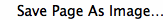
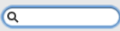
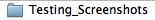
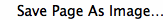
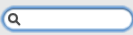
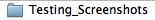
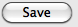
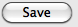

#to do: it's saving in the wrong directory. we want to save it in ~/Desktop/testing screenshots
#bring in the OS module
import os
#Configs
Screen=Screen(1)#Change 1 to 0 if using only 1 monitor
#--Importer--
results = []
my_file = file("/users/dannyrosen/Desktop/test.txt", "r")
for line in my_file:
results.append(line.replace("\n", " "))
x = (len(results))
def list():
results = []
my_file = file("/users/dannyrosen/Desktop/test.txt", "r")
for line in my_file:
results.append(line.replace("\n", ""))
global address
for i in range (len(results)):
address=(results[num])
#--Counter--
num = int(0) #getting the starting number .
another_num = int(1)
#create counter for going through the text list
def count():
global another_num
global num
num = num + another_num #add the value to [num]
#get os type
myOS = Env.getOS()
#assign dev url prefix
def fullscreen():
keyDown(Key.SHIFT+Key.CMD)
type("f")#makes fullscreen
keyUp(Key.SHIFT+Key.CMD)
#Get the date
global date
date = os.popen('date').read()
global date_replace_dash
date_replace_dash = date.replace(" ","-")
global clean_date
clean_date = clean_date = date_replace_dash.rstrip('\n')
#assign paths we're gonna make to dir_check variable (tested on mac)
myPath = os.path.dirname(getBundlePath())
home = os.environ['HOME']
def firefox_cleanup():
#clean date because it has spaces and mv hates spaces
home = os.environ['HOME']
command_firefox = ("mv" + " " + home + "/Desktop/Testing_Screenshots/" +  + " " + home + "/Desktop/Testing_Screenshots/Firefox" + "/" + clean_date +"/")
print command_firefox
os.popen(command_firefox)
#make directories
#if myOS == OS.MAC:
# if dir_check == 1:
# print "/Desktop/Testing_Screenshots exists"
#safari testing would go here
#else:
# print "Sorry, not a Mac"
def firefox():
global dir_check
dir_check = os.path.exists(home + "/Desktop/Testing_Screenshots/")
if dir_check == 1:
print ("it's there")
else:
os.makedirs(home + "/Desktop/Testing_Screenshots/Firefox/" + clean_date)
os.makedirs(home + "/Desktop/Testing_Screenshots/Chrome/" + clean_date)
openApp("Firefox")
wait(3)
type("l", KEY_CMD) # switch to address field
wait(1)
paste(address)
type(Key.ENTER)
Screen.wait(, 15)
run
fullscreen()
wait(1)
type(Key.HOME)
Screen.rightClick(,2)
Screen.click()
Screen.click()
Screen.click()
#OS DEPENDENT *if mac*
Screen.click()
type("testing_screen")
wait(2)
Screen.doubleClick()
type(Key.TAB)
paste(address +
+ " " + home + "/Desktop/Testing_Screenshots/Firefox" + "/" + clean_date +"/")
print command_firefox
os.popen(command_firefox)
#make directories
#if myOS == OS.MAC:
# if dir_check == 1:
# print "/Desktop/Testing_Screenshots exists"
#safari testing would go here
#else:
# print "Sorry, not a Mac"
def firefox():
global dir_check
dir_check = os.path.exists(home + "/Desktop/Testing_Screenshots/")
if dir_check == 1:
print ("it's there")
else:
os.makedirs(home + "/Desktop/Testing_Screenshots/Firefox/" + clean_date)
os.makedirs(home + "/Desktop/Testing_Screenshots/Chrome/" + clean_date)
openApp("Firefox")
wait(3)
type("l", KEY_CMD) # switch to address field
wait(1)
paste(address)
type(Key.ENTER)
Screen.wait(, 15)
run
fullscreen()
wait(1)
type(Key.HOME)
Screen.rightClick(,2)
Screen.click()
Screen.click()
Screen.click()
#OS DEPENDENT *if mac*
Screen.click()
type("testing_screen")
wait(2)
Screen.doubleClick()
type(Key.TAB)
paste(address +  )
Screen.click()
run
fullscreen()
while (num < x):
run
list()
run
firefox()
run
count()
run
firefox_cleanup()
)
Screen.click()
run
fullscreen()
while (num < x):
run
list()
run
firefox()
run
count()
run
firefox_cleanup()